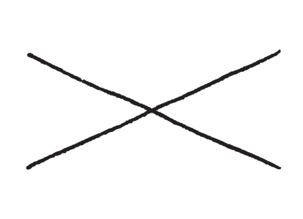
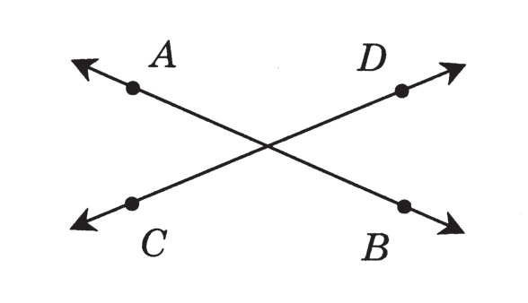
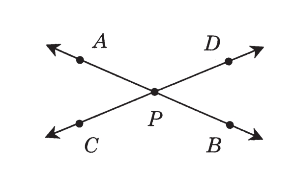
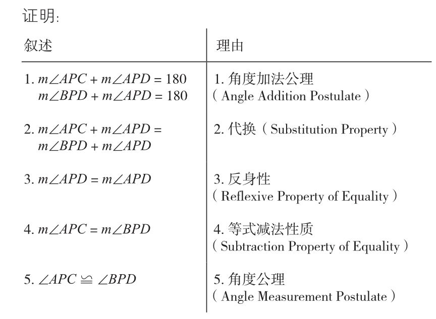
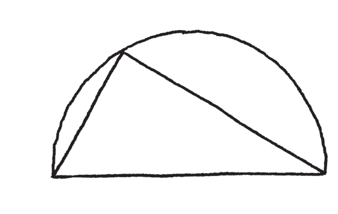
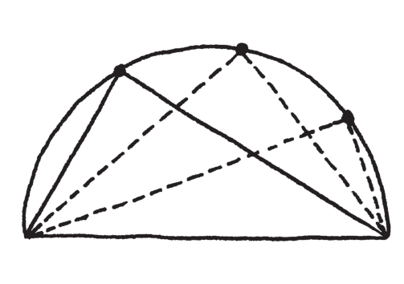
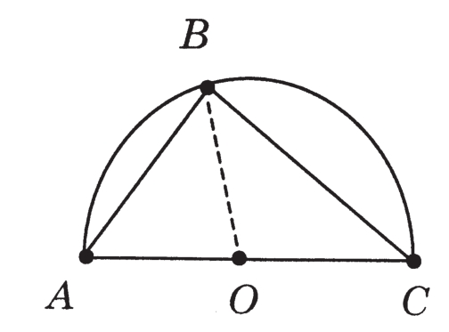
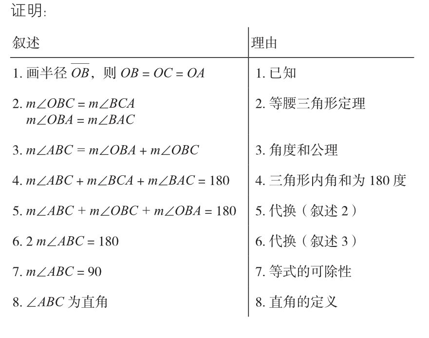
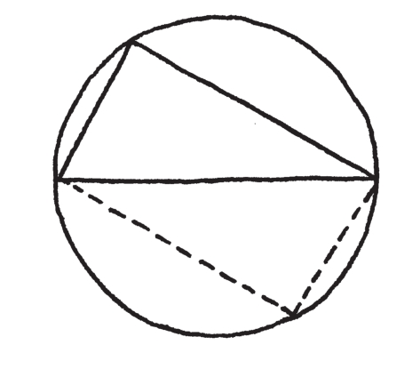

对于一位提出严厉指控的作者来说，最恼人的是，他所指控的对象却表示愿意支持他。中学里的几何课程比披着羊皮的狼更狡猾，比假朋友更不忠。正因为学校尝试借此课程向学生介绍论证的艺术，才使得它变得如此危险。
假冒成一个竞技场，在这里学生终于要参与真正的数学推论，这个病毒击中了数学的要害，摧毁了创造性理性论证的本质，磨灭学生对这个迷人又美妙学科的喜爱，使他们永远都不能以自然又直觉的方式来思考数学。
这背后的机制是微妙且迂回的。它先以一堆不得要领的定义、命题、符号来惊吓且麻痹被害的学生，再系统地引导其进入矫揉造作的语言，以及人为的所谓“正统几何证明”公式，缓慢地、精心地阻断了学生对形状及其模式的自然好奇心或直觉。
撇开所有隐喻，我直白地说，在整个K-12年级数学课程纲要当中，几何是到目前为止最具心灵及情绪杀伤力的。其他的课程可能还隐藏着美丽的小鸟，或是把小鸟关在笼子里，但是几何课，则是公开的、残忍的酷刑。（显然我还是得用到隐喻）
问题就出在系统性地从根上摧毁学生的直觉。证明，是数学论证，是一部小说，是一首诗。它的目的是在“满足”（satisfy）。一个完美的证明应该是要说明，而且应该说明得清楚、巧妙且直截了当。一份完美、制作完善的论证，应该感觉像是醍醐灌顶，应该是指路的明灯——它应该振奋我们的精神、照亮我们的心灵，而且应该是有趣迷人的。
但是我们几何课上的证明却没有一丁点有趣迷人之处。呈现给学生的是僵硬的、教条式的公式，由这些公式来进行所谓的“证明”——这些公式是不必要且不适当的，就如同要求孩子们必须根据花朵的属别和种别来种花一样。
我们来看看这类疯狂事迹的一些例子。我们先来看，这两条交叉的直线：

通常会做的第一件事就是不必要地加入过多符号，搅浑了这摊水。显然，我们没有办法简单地说出两条相交的直线，必须给予名称，而不只是简单的名称，像是“第一条线”和“第二条线”，甚至“a”和“b”。我们必须（根据中学几何课程）在这些直线上选择随机且不相关的点，然后使用特殊的“直线符号”来表示这些直线。

你看，现在我们得称它们为AB和CD。然后上帝特准你可以省略掉它们顶上的小横杠——“AB”代表直线AB的长度（至少我认为是这个意思）。不管这是多么没意义的、复杂的事，大家都必须学习这样做。现在来看实际上的陈述，通常是以一些荒谬的名称来称呼，像是：
命题2.1.1.
令AB和CD相交于P。则∠APC≌∠BPD。

换言之，两侧的角度是相等的。我的天啊，两条相交的直线，它们的组成当然是对称的！然后呢，好像弄成这样还不够糟，对于直线和角度这样显而易见的叙述，还必须要加以“证明”。

原本应该是由人以世界上的自然语言写出来的饶富机智及有趣味的论证，我们却把它搞成这样沉闷、没有灵魂、官样文章式的证明，层层堆砌成山！我们真的要将这么直截了当的观察，弄成这么长的论文吗？老实说，你真的在读它吗？当然没有。谁会要读呢？
在这么简单的事情上搞得那么隆重，结果就是让人们怀疑起自己的直觉。对于如此显而易见的事情，坚持要“严格的证明”（就像它会构成法律上正式的证据似的），就像是对学生说：“你的感觉和想法是可疑的，你必须以我们的方式来思考和说话。”
毫无疑问，我们的确有要做数学正式证明的时候，但是当学生第一次接触到数学论证时，不应该这么做。至少让他们熟悉一些数学主题，以及了解对这些主题能有什么期待之后，再开始正式严谨的讨论。只有在有危机的时候——当你发现你想象的物件，它的行为违反了直觉；以及当有矛盾发生时，严格的正式证明才变得很重要。但是这种过分的预防性保护措施，在这里是完完全全没有必要的——疾病还没发生呢！当然，如果有逻辑危机发生的时候，那么很明显的应该加以研究，论证必须做得清楚明白，但那个过程可以进行得直觉一些，也不必那么正式。事实上，数学的精髓，就是和自己的证明进行这样的对话。
所以，不是只有大部分的小孩被这个假学问完全搞迷糊了——没有什么比去证明显而易见的事更让人困惑了——即使那些还保有直觉的少数人，也必须将他们优异、绝妙的点子转换并置入这个荒诞难解的架构里，好让他们的老师说它是“正确的”。老师则沾沾自喜地认为他让学生的心智变敏锐了。
再举一个比较严肃的例子。我们来看看一个半圆里面的三角形：

这个模式的美丽真相在于，无论三角形的顶点是在圆周的哪里，它都是直角。我不反对用“直角”（right angle），如果这个名词与问题有关，而且方便讨论的话。我反对的不是专有名词本身，而是没有要领、没有必要的专有名词。如果学生喜欢的话，我也很乐意用“转角”或“角落”。

我们的直觉在这里会有些疑问。这会一直都成立吗？不是那么清楚，甚至看起来不太可能——如果我移动那个顶点，角度不会改变吗？此处我们有一个绝妙的数学题目！这是真的吗？如果是真的，为什么是真的？这是多么伟大的作业呀！这是可以让我们的智慧和想象力动起来的一个绝佳机会！当然学生不会得到这样的机会，他们的好奇心和兴趣立刻就会被泼了冷水：
定理9.5
令ΔABC内接于一个直径为AC的半圆。
则∠ABC为直角。


还有什么比这更无聊、更不直截了当的？有什么论证能更令人困惑、更难读？这绝不是数学！一个证明应该是神迹的显现，而不是来自五角大厦的密码讯息。这是把逻辑严谨性摆错了地方的结果：丑陋。论证的精神被令人迷惑的形式主义给埋葬了。
没有任何数学家是这样工作的，从来没有任何数学家以这种方式工作。这是对数学这门学问完全地、彻底地误解。数学不是在我们自己和我们的直觉之间树起屏障，也不是要让简单的事情变得复杂。数学是移除通往直觉的障碍，让简单的事情维持简单。
前述令人倒胃口的证明，拿来对比我七年级学生所做的论证：
将这个三角形旋转半圈，使其成为一个圆里面的四边形，由于三角形是完全旋转过来的，此四边形的边必然是平行的，因此这是一个平行四边形。然而它也不是斜边四边形，因为它的两条对角线都是这个圆的直径，因此它们是等长的。也就是说，它必然是一个长方形。这就是为什么它的角是直角。

这不是很轻松愉快吗？重点不在于这项论证的点子是否比另一个高明，而是在于点子的出现。（事实上，第一个证明的点子是相当美妙的，可惜被隔上了一层深黑色的玻璃。）
更重要的是，这是学生自己的点子。在课堂上有个好题目给学生做，他们提出猜测、试着证明，然后其中一名学生就做出了这个结果。当然这花了好几天工夫，而且是经过一连串失败后的结果。
老实说，我曾经大幅改述这个证明。最初版本有些迂回，且含有许多不必要的赘词（以及拼写和语法错误）。但是我认为我了解他的意思。这些缺点是好事，让我这个老师有事情可做。我得以指出一些文体上和逻辑上的问题，学生则因而得以改进他的论证。举例而言，我对于两条对角线都是直径这一点不是很满意——我不认为这是完全显而易见的——但这只表示需要对这个问题多一点思考，以及从中获得多一些了解。事实上，这名学生可以把它修补得更好：
由于这个三角形绕着圆形转了半圈，顶点必然正好和原来的位置处于正对面的位置。这就是为什么四边形的对角线是圆的直径。
这就是一项伟大的作业，一个美妙的数学作品。我不确定谁对此更引以为傲，是学生还是我自己。我就是要我的学生们体验到这类的经验历。
几何学标准课程的问题在于，艺术家挣扎奋斗的个人经验，全都被消灭了。证明的艺术性，被毫无生气、形式化的演绎法的僵硬步骤所取代。教科书呈现出一整套的定义、定理及证明，教师们照抄在黑板上，学生们照抄在笔记簿上，然后要求学生再依样画葫芦地写习题。能快速学会这种模式的，就是“好”学生。
结果，在创造的行动里，学生变成了被动的参与者。学生做出叙述，去符合现成的证明模式，而不是因为他们的确这样想。他们被训练去模仿论证，而不是去想出论证。因此，他们不仅不知道老师在说些什么，他们也不知道自己在说些什么。
即使是定义的传统表达方式，也是个谎言。为了创造出简洁的假象，在提出典型的一系列命题和定理之前，先提供一套定义，让叙述及证明可以尽可能的简洁。表面上，这似乎是无害的：做一些化繁为简的定义，这样叙述起来可以更加轻松便利，不是很好吗？问题在于，定义非常重要。定义是身为艺术家的你认为重要而做出的美学决定。而且它是因问题而产生的。定义是要彰显出来，并让人们注意到一项特质或结构上的属性的。在历史上，这是从问题研究的过程中产生的，而不是问题的前提。
重点是，你不会从定义开始，你是从问题开始。一直到毕达哥拉斯（Pythagoras）试图测量正方形的对角线，发现它无法以分数来表示，在那之前没有人想过，数可能是“无理的”（irrational）。只有在你的论证达到某一点，你必须要做出区别来厘清时，定义才有意义。在没有动机的时候做出的定义，更有可能造成混淆。
这只是将学生排除在数学过程之外的一个例子。学生必须在有需要的时候能够做出自己的定义——自己为辩论做架构。我不要学生说“定义、定理、证明”，我要他们说“我的定义、我的定理、我的证明”。
把这些抱怨都摆在一旁吧，这种呈现方式的真正问题在于，它很枯燥。效率和经济性并不是好的教学方法。我很难说欧几里得（Euclid）是否赞同此点，但是我知道阿基米德（Archimedes）绝对不会赞同。
辛普利丘： 我们在这里先停一下。我不知道你的情况 如何，不过我是真的喜欢我的中学几何课。我喜欢那个架构，也喜欢在僵硬的证明形式中做几何。
萨尔维阿蒂： 我相信你是喜欢的。你可能偶尔也会做到一些不错的题目。很多人喜欢几何课（虽然更多人痛恨它），但是这不是支持目前制度的好理由，这反而强有力地证实了数学本身的魅力。要完全摧毁这么美丽的事物，是非常困难的；即使是数学残留的影子，仍是如此吸引人并让人满足。许多人也还是喜欢按数字涂色，那是令人放松而且有趣的动手活动，虽然那并不是真正的绘画。
辛普利丘：可是我是在告诉你，我喜欢它。
萨尔维阿蒂： 如果你曾有过更自然的数学经验，你会更喜欢它。
辛普利丘： 所以，我们应该设立一些没有任何形式的数学旅程，学生遇到什么就学什么吗？
萨尔维阿蒂： 正是如此。问题会引导出其他的问题，在有需要时，就会发展出技巧，新的主题就会自然地产生。如果有些课题在求学的12年之间都没有遇到过，它会多有趣或多重要呢？
辛普利丘：你完全疯了。
萨尔维阿蒂： 我也许是疯了。但是即使在传统的框架下工作，一位好的老师也可以引导讨论和问题的走向，使得学生能自己发现及发明数学。真正的问题是，行政官僚体制不容许个别教师做这样的事。因为要遵循一套课程纲要，老师无法主导教学的内容。标准还有课纲都是不应该存在的，应该让老师做他们觉得对他们的学生最好的事。
辛普利丘： 但这样一来，学校怎么保证所有的学生都获得相同的基本知识？我们要如何精确地衡量他们的相对知识程度？
萨尔维阿蒂： 学校不能做保证，而且我们也不用这么做。就像在真实的人生中一样，最终你必须面对一个事实，就是人都不一样，但这并没有关系。无论如何，这没有什么大不了。一个高中毕业生不知道什么是半角公式（说得好像他们现在就了解似的！），又怎样？至少那个人对于这个科目到底是怎么回事还有些概念，而且还曾经看到过美妙的事物。
对标准课程纲要的批评，要结束的此时，我要为社会提供一项服务，就是首次完全诚实地呈现K-12年级数学的课程纲要。